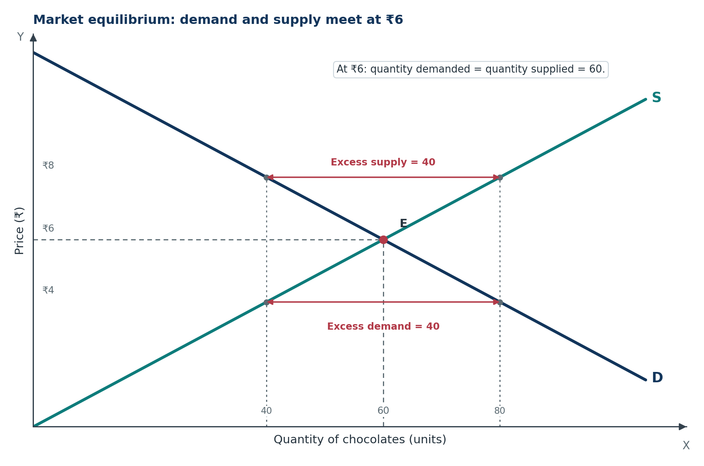
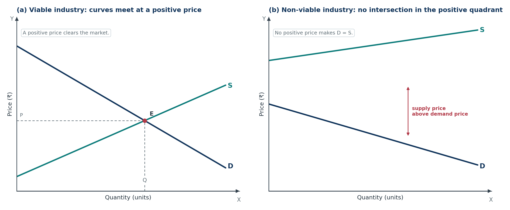
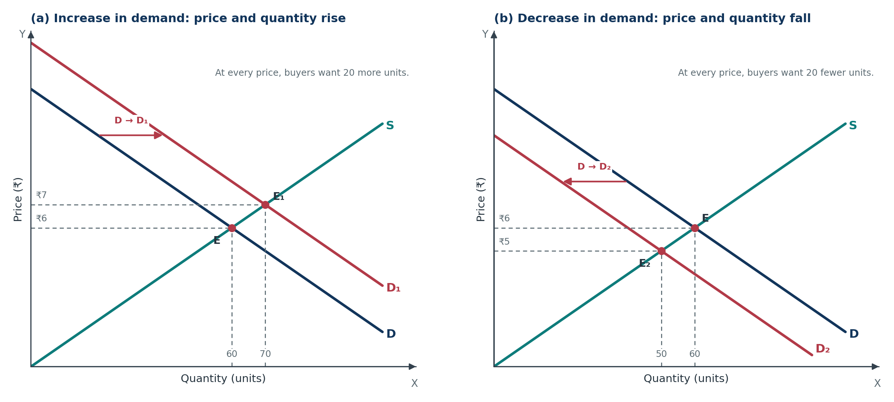
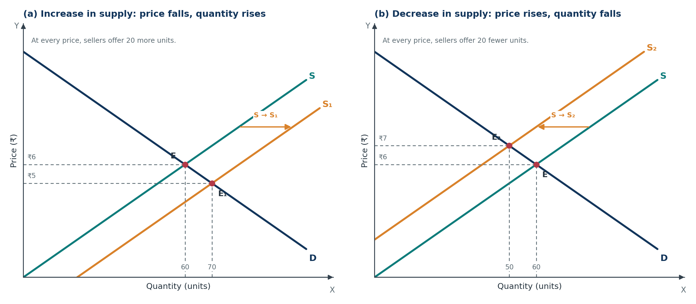
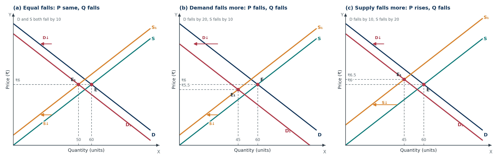
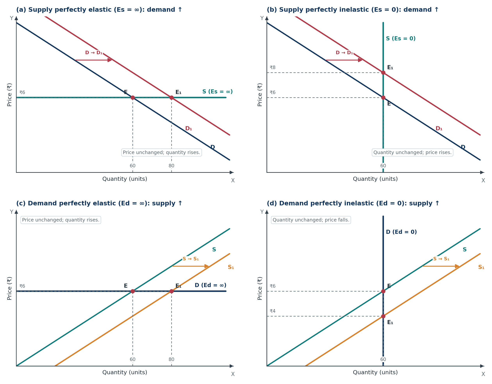
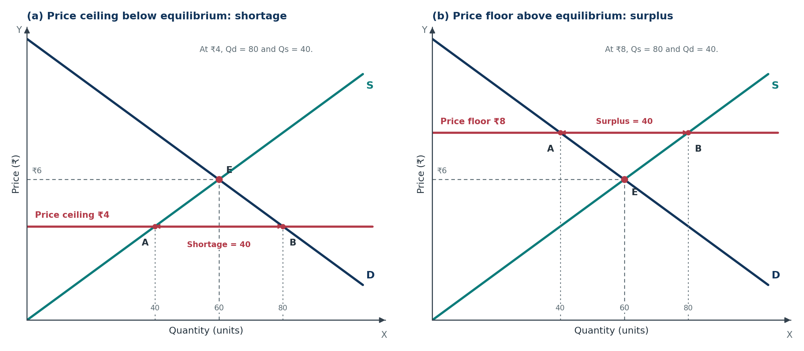

Microeconomics · Class 11Chapter 11Notes + quick revision
Price Determination and Simple Applications
Demand and supply stop being separate ideas here. Learn why ₹6 clears the chocolate market, how a shift in either curve moves the equilibrium, and what a government price control does to buyers and sellers.
Chapter at a glance
Seven stops, one twelve-case table, and a short exam corner. Tap a card to jump straight in.
The one-line idea: price is set where market demand equals market supply; a shift in either curve moves the equilibrium, and a government price control creates either a shortage or a surplus.
The core question: why does the price of a chocolate settle at ₹6, and what happens when the government fixes a price above or below ₹6?
Key Terms — Read These First
The words that carry marks. Read them once now, then test yourself after the chapter.
- Market equilibrium
- A situation in which market demand equals market supply at a particular price.
- Equilibrium price
- The price at which quantity demanded equals quantity supplied.
- Equilibrium quantity
- The quantity bought and sold at the equilibrium price.
- Market demand
- The sum of the quantities demanded by all buyers at each price.
- Market supply
- The sum of the quantities supplied by all sellers at each price.
- Excess demand
- Quantity demanded is greater than quantity supplied at the prevailing price; also called a shortage.
- Excess supply
- Quantity supplied is greater than quantity demanded at the prevailing price; also called a surplus.
- Price mechanism
- The free movement of prices, guided by demand and supply, that coordinates buyers’ and sellers’ decisions.
- Viable industry
- An industry whose demand and supply curves intersect at a positive price and positive quantity.
- Non-viable industry
- An industry whose demand and supply curves do not intersect anywhere in the positive quadrant.
- Price ceiling
- A maximum price fixed by the government below the equilibrium price.
- Price floor
- A minimum price fixed by the government above the equilibrium price.
- Minimum support price (MSP)
- A price floor announced by the government for agricultural produce, usually before sowing.
- Buffer stock
- Government stock of a commodity, bought at the support price and released during shortages.
- Black marketing
- Selling a commodity at a price higher than the maximum price fixed by the government.
- Rationing
- A system that gives consumers a fixed quota of an essential good at a controlled price.
- Dual pricing
- Selling the same product at two prices at the same time — for example, subsidised PDS rice and open-market rice.
- Minimum wage
- A price floor in the labour market: the lowest wage an employer is legally allowed to pay.
Market Equilibrium
The idea of this section. Demand alone tells us what buyers want. Supply alone tells us what sellers offer. Equilibrium is the price at which the two plans agree.
1.1 What equilibrium means
Definition. Market equilibrium is a situation in which the quantity demanded of a commodity is equal to the quantity supplied at a particular price.
The price at which this equality holds is the equilibrium price. The quantity bought and sold at that price is the equilibrium quantity.
In simple words. Equilibrium is the market’s resting point. At that price, buyers want exactly as much as sellers are offering — no queue of desperate buyers, no pile of unsold stock.
Example. In a chocolate market, buyers together want 60 chocolates at ₹6 each, and sellers together offer 60 chocolates at ₹6. That price clears the market.
Under perfect competition, the industry is the price maker: its market demand and market supply curves meet to determine the price. Each individual firm is a price taker — it accepts that price and decides only how much to produce. The firm cannot change the market price because its own output is a tiny part of total supply.
Market demand is the sum of all buyers’ quantities demanded at each price. Its curve slopes downward because of the law of demand. Market supply is the sum of all sellers’ quantities supplied at each price. Its curve slopes upward because of the law of supply.
1.2 The equilibrium schedule
The table below shows the market for chocolates. The first column is the price, the next two are market demand and market supply, and the last two show the gap and its meaning.
| Price (₹) | Market demand (units) | Market supply (units) | Shortage (−) or surplus (+) | Situation |
|---|---|---|---|---|
| 2 | 100 | 20 | −80 | Excess demand: D > S |
| 4 | 80 | 40 | −40 | Excess demand: D > S |
| 6 | 60 | 60 | 0 | Equilibrium: D = S |
| 8 | 40 | 80 | +40 | Excess supply: S > D |
| 10 | 20 | 100 | +80 | Excess supply: S > D |
At ₹6, demand and supply are both 60. That is the equilibrium price, and 60 chocolates is the equilibrium quantity.
At any price below ₹6, demand is greater than supply. At any price above ₹6, supply is greater than demand. The market is pushed towards ₹6 from both sides.
1.3 The equilibrium graph

What to notice. The equilibrium is the single point where the two curves cross. The dashed lines from E to the axes read off ₹6 and 60. At ₹4, the horizontal gap between the supply curve (40 units) and the demand curve (80 units) is excess demand. At ₹8, the gap between demand (40 units) and supply (80 units) is excess supply.
1.4 Why no other price can last
Suppose the price is ₹8. Sellers offer 80 chocolates, but buyers want only 40. Forty chocolates remain unsold. Sellers compete for buyers by cutting the price. As the price falls, buyers demand more and sellers offer less, until the two are equal at ₹6.
Suppose the price is ₹4. Buyers want 80 chocolates, but sellers offer only 40. Forty buyers go home empty-handed. They compete with one another and bid the price up. As the price rises, buyers demand less and sellers offer more, until the two are equal at ₹6.
Only at ₹6 is there no shortage and no surplus, so there is no force pushing the price either way.
Stable equilibrium. An equilibrium is stable when any departure from it sets in motion forces that bring the market back. The intersection of a downward-sloping demand curve and an upward-sloping supply curve is stable in this sense.
Exam point. A price above equilibrium creates excess supply, not excess demand. A price below equilibrium creates excess demand, not excess supply. Getting this direction right is half the answer.
1.5 The price mechanism
Definition. The price mechanism is the process by which prices, determined by the free interaction of demand and supply, coordinate the separate decisions of buyers and sellers.
Prices do two jobs:
- Signal: a rising price tells buyers to cut back and sellers to expand; a falling price tells them the opposite.
- Incentive: a higher price rewards sellers for supplying more and makes buyers economise.
No single person decides the equilibrium price. Thousands of independent decisions produce it. This is why economists say the market coordinates itself through prices.
Equilibrium does not mean everyone is happy. It means the plans of buyers and sellers are consistent at that price. Some buyers may still feel the price is too high and choose not to buy; some sellers may wish they could get more. But at ₹6, there is no pressure for the price to change.
- Q1. Define equilibrium price and equilibrium quantity.
- Q2. At ₹10, quantity demanded is 30 units and quantity supplied is 70 units. Is there excess demand or excess supply? What will happen to the price?
- Q3. Why is market equilibrium described as a stable situation?
Show answers
- Equilibrium price is the price at which quantity demanded equals quantity supplied. Equilibrium quantity is the quantity bought and sold at that price.
- There is excess supply of 70 − 30 = 40 units. Sellers cannot sell all their stock, so they compete by lowering the price. The price will fall until demand and supply are equal.
- At a price above equilibrium there is excess supply, which pushes the price down. At a price below equilibrium there is excess demand, which pushes the price up. Only at the equilibrium price is there no shortage or surplus, so no force remains to change the price.
Excess Demand, Excess Supply and Viability
The idea of this section. Equilibrium is a point, but real markets often sit away from it. The gap between what buyers want and what sellers offer is the engine that moves the price.
2.1 Excess demand
Definition. Excess demand is a situation in which quantity demanded is greater than quantity supplied at the prevailing market price.
where Qd is quantity demanded and Qs is quantity supplied at the current price.
Excess demand appears when:
- the price is below the equilibrium price;
- demand increases while supply has not adjusted;
- supply decreases while demand has not adjusted.
Buyers cannot buy all they want at the current price. They compete by offering a higher price, so the price rises. In a controlled market, excess demand can show up as long queues, waiting lists, rationing or black marketing instead of a price rise.
2.2 Excess supply
Definition. Excess supply is a situation in which quantity supplied is greater than quantity demanded at the prevailing market price.
Excess supply appears when:
- the price is above the equilibrium price;
- supply increases while demand has not adjusted;
- demand decreases while supply has not adjusted.
Sellers cannot sell all their stock at the current price. They compete by cutting the price, so the price falls. Unsold stock, discounts and clearance sales are visible signs of excess supply.
2.3 How the market adjusts
| Starting situation | What buyers and sellers do | Effect on price | Effect on quantities |
|---|---|---|---|
| Price below equilibrium → excess demand | Buyers compete; sellers raise the price | Price rises | Qd falls, Qs rises |
| Price above equilibrium → excess supply | Sellers compete; buyers wait for cuts | Price falls | Qd rises, Qs falls |
The adjustment happens through movements along the existing curves. A change in price changes quantity demanded and quantity supplied; it does not shift either curve. Shifts happen only when a non-price determinant changes.
Common mistake. “Excess demand shifts the demand curve to the right.” No. Excess demand is a gap at the current price. The demand curve has not moved; the price simply rises along it.
2.4 Viable and non-viable industry
Definition. A viable industry is an industry whose demand curve and supply curve intersect at a positive price and a positive quantity.
Definition. A non-viable industry is an industry whose demand curve and supply curve do not intersect anywhere in the positive quadrant.

What to notice. In panel (a), there is a price at which buyers and sellers agree. In panel (b), the minimum price sellers need is higher than the maximum price buyers are willing to pay, at every positive quantity. The curves would meet only at a negative price or negative quantity, which has no economic meaning.
Why a non-viable industry cannot produce. The cost of making the good is so high that buyers will not pay a price that covers it. Producing more does not help, because the gap between the supply price and the demand price remains. The industry is economically unviable unless costs fall, demand rises, or the government subsidises it.
- Q1. Distinguish between excess demand and excess supply.
- Q2. At the current price, quantity demanded is 150 units and quantity supplied is 90 units. Calculate the gap and state the direction in which the price will move.
- Q3. Why does a non-viable industry have no equilibrium in the positive quadrant?
Show answers
- Excess demand means Qd > Qs at the current price; buyers compete and the price rises. Excess supply means Qs > Qd at the current price; sellers compete and the price falls.
- Excess demand = 150 − 90 = 60 units. Buyers cannot get all they want, so they bid the price up. The price will rise towards the equilibrium level.
- A non-viable industry’s supply curve lies above its demand curve at every positive quantity. The lowest price at which sellers will supply is above the highest price buyers will pay, so no positive price makes Qd = Qs. The curves do not meet in the positive quadrant.
Change in Demand
The idea of this section. A change in price moves us along a demand curve. A change in anything else — income, tastes, the price of a related good, population — shifts the whole curve. When demand shifts, the equilibrium moves.
3.1 What shifts the demand curve
The demand curve shifts when a non-price determinant changes:
- income of buyers (normal and inferior goods);
- price of substitute goods;
- price of complementary goods;
- tastes and preferences;
- expectations about future prices;
- population and its composition.
A rightward shift is an increase in demand: at every price, buyers want more. A leftward shift is a decrease in demand: at every price, buyers want less.
3.2 Increase in demand
Suppose buyers’ income rises and chocolates are a normal good. At the old price of ₹6, buyers now want more than 60 chocolates. This creates excess demand. Sellers respond by raising the price and expanding quantity supplied along the existing supply curve. The new equilibrium has a higher price and a higher quantity.

What to notice. In both panels, only the demand curve shifts. The movement from the old equilibrium E to the new equilibrium E₁ or E₂ is a movement along the supply curve. The supply curve itself stays where it was.
3.3 Decrease in demand
Suppose the price of a close substitute falls, so buyers switch away from chocolates. At ₹6, buyers now want fewer than 60 chocolates. Sellers face excess supply and cut the price. As the price falls, buyers move down along the new demand curve and sellers move down along the supply curve. The new equilibrium has a lower price and a lower quantity.
3.4 The direction rule
| Change in demand | Shift of demand curve | Equilibrium price | Equilibrium quantity |
|---|---|---|---|
| Increase | Right | Rises | Rises |
| Decrease | Left | Falls | Falls |
One-line memory: demand and equilibrium price move in the same direction; demand and equilibrium quantity also move in the same direction.
Example. During a festival, demand for sweets rises. Sweet shops sell more boxes and charge a higher price per box. After the festival, demand falls, and both price and quantity sold come down.
- Q1. What is the difference between an increase in demand and an increase in quantity demanded?
- Q2. Buyers’ income rises and the good is a normal good. Trace the effect on equilibrium price and quantity.
- Q3. Why does equilibrium quantity rise after an increase in demand even though the supply curve has not shifted?
Show answers
- An increase in demand is a rightward shift of the whole demand curve caused by a non-price factor; at every price, buyers want more. An increase in quantity demanded is a movement along the same demand curve caused by a fall in the good’s own price.
- Higher income raises demand at every price, shifting the demand curve right. At the old price there is excess demand, so the price rises. The higher price induces sellers to supply more along the supply curve. Equilibrium price and quantity both rise.
- The higher price is the signal. It makes sellers willing to produce and sell more, so the quantity supplied rises along the existing supply curve until it matches the new quantity demanded.
Change in Supply
The idea of this section. Supply shifts when costs, technology, taxes, the number of firms or other non-price factors change. A supply shift moves the equilibrium in the opposite direction for price and quantity.
4.1 What shifts the supply curve
The supply curve shifts when a non-price determinant changes:
- prices of factors of production (wages, rent, raw material);
- prices of other goods that the firm could produce;
- state of technology;
- taxes and subsidies;
- expectations about future prices;
- goals of the firm;
- number of firms in the market.
A rightward shift is an increase in supply: at every price, sellers offer more. A leftward shift is a decrease in supply: at every price, sellers offer less.
4.2 Increase in supply
Suppose a new machine lowers the cost of making chocolates. At the old price of ₹6, sellers now want to offer more than 60 chocolates. This creates excess supply. Sellers cut the price to clear the stock. As the price falls, buyers move down along the demand curve and buy more. The new equilibrium has a lower price and a higher quantity.

What to notice. Only the supply curve shifts. The new equilibrium is reached by moving along the demand curve. A supply increase is good news for buyers (lower price, more quantity) and a supply decrease is bad news for buyers (higher price, less quantity).
4.3 Decrease in supply
Suppose the price of cocoa beans rises. Producing chocolate becomes more expensive, so at every price sellers offer less. At ₹6, buyers want 60 but sellers offer fewer, creating excess demand. The price rises, buyers cut back along the demand curve, and sellers expand along the new supply curve. The new equilibrium has a higher price and a lower quantity.
4.4 The direction rule
| Change in supply | Shift of supply curve | Equilibrium price | Equilibrium quantity |
|---|---|---|---|
| Increase | Right | Falls | Rises |
| Decrease | Left | Rises | Falls |
One-line memory: price and quantity move in opposite directions when supply changes.
Example. A bumper wheat harvest increases supply. Mandi prices fall, but more wheat is bought and sold. A drought does the opposite: supply falls, price rises, quantity traded falls.
- Q1. Distinguish between an increase in supply and an increase in quantity supplied.
- Q2. A new technology lowers the cost of producing textiles. What happens to equilibrium price and quantity?
- Q3. Why does an increase in supply lower the price but raise the quantity traded?
Show answers
- An increase in supply is a rightward shift of the whole supply curve caused by a non-price factor; at every price, sellers offer more. An increase in quantity supplied is a movement along the same supply curve caused by a rise in the good’s own price.
- The cost fall shifts supply right. At the old price there is excess supply, so the price falls. The lower price encourages buyers to buy more. Equilibrium price falls and equilibrium quantity rises.
- Sellers can now offer more at every price, so at the old price stock is unsold. To clear it, sellers cut the price. The lower price brings buyers into the market and raises the quantity demanded until the market clears at a larger quantity.
Change in Both Demand and Supply
The idea of this section. When both curves shift, two forces act at once. One variable becomes certain, the other depends on which shift is larger. This is the part of the chapter that examiners love.
5.1 The certain-and-ambiguous rule
- If demand and supply shift in the same direction (both increase or both decrease), the change in quantity is certain. The change in price is uncertain.
- If demand and supply shift in opposite directions, the change in price is certain. The change in quantity is uncertain.
Why? A demand increase pushes both price and quantity up. A supply increase pushes price down but quantity up. When both increase, quantity is pushed up by both forces, so it must rise; price is pushed in opposite directions, so the net effect depends on the size of each shift.
The same logic works for the other three pairs:
- Both decrease → quantity certainly falls; price depends.
- Demand decreases and supply increases → price certainly falls; quantity depends.
- Demand increases and supply decreases → price certainly rises; quantity depends.
5.2 All twelve cases
“Equal” in the table means the two curves shift by the same number of units at the original price. It does not mean equal percentage changes.
| # | Demand | Supply | Relative size | Price | Quantity |
|---|---|---|---|---|---|
| 1 | Increases | Increases | Equal | Same | Rises |
| 2 | Increases | Increases | Demand increase > supply increase | Rises | Rises |
| 3 | Increases | Increases | Demand increase < supply increase | Falls | Rises |
| 4 | Decreases | Decreases | Equal | Same | Falls |
| 5 | Decreases | Decreases | Demand decrease > supply decrease | Falls | Falls |
| 6 | Decreases | Decreases | Demand decrease < supply decrease | Rises | Falls |
| 7 | Decreases | Increases | Equal | Falls | Same |
| 8 | Decreases | Increases | Demand decrease > supply increase | Falls | Falls |
| 9 | Decreases | Increases | Demand decrease < supply increase | Falls | Rises |
| 10 | Increases | Decreases | Equal | Rises | Same |
| 11 | Increases | Decreases | Demand increase > supply decrease | Rises | Rises |
| 12 | Increases | Decreases | Demand increase < supply decrease | Rises | Falls |
5.3 Both demand and supply decrease
This is the case drawn in Figure 11.5, because it shows the relative-size idea most clearly. Start at E with price ₹6 and quantity 60.
- Equal decreases: demand and supply both fall by the same amount. The new equilibrium has the same price and a lower quantity. The two price effects cancel.
- Demand falls more than supply: the demand effect dominates. Price falls and quantity falls.
- Demand falls less than supply: the supply effect dominates. Price rises and quantity falls.

What to notice. Quantity falls in all three panels because both shifts reduce quantity. Price is the ambiguous variable: it stays the same, falls or rises depending on which curve shifted more. The labels D₁ and S₁ mark the new curves; the old curves remain for comparison.
5.4 The other three pairs
Both increase. Quantity certainly rises. Price stays the same if the shifts are equal, rises if demand increases more, and falls if supply increases more. Example: incomes rise (demand up) at the same time as a new technology lowers costs (supply up).
Demand decreases, supply increases. Price certainly falls. Quantity stays the same if the shifts are equal, falls if demand decreases more, and rises if supply increases more. Example: a health scare reduces demand for a soft drink while new factories expand supply.
Demand increases, supply decreases. Price certainly rises. Quantity stays the same if the shifts are equal, rises if demand increases more, and falls if supply decreases more. Example: festive demand rises while a drought cuts the supply of sweets.
5.5 A three-step method for any combined-shift question
- Draw the first shift and note which way price and quantity move.
- Draw the second shift from the new equilibrium and note its direction.
- Look for the certain variable. Same-direction shifts make quantity certain; opposite-direction shifts make price certain. Use the relative size to settle the other variable.
Exam tip. If the question does not specify the relative size of the shifts, do not invent a price change when both curves shift in the same direction. Write “price remains unchanged only if the shifts are equal; otherwise it depends on the relative size”. That is the accurate answer.
- Q1. When both demand and supply increase, which equilibrium variable is certain and which is uncertain?
- Q2. Demand falls by 30 units and supply rises by 10 units at the old price. What happens to equilibrium price and quantity?
- Q3. Why is the price effect uncertain when demand and supply both decrease by different amounts?
Show answers
- Quantity is certain: it rises because both shifts push quantity up. Price is uncertain: the demand increase pushes price up, the supply increase pushes it down, and the net effect depends on which shift is larger.
- The demand fall is larger than the supply rise (30 > 10). Price certainly falls because both shifts push price down. Quantity falls because the demand fall outweighs the supply rise.
- A demand decrease pushes price down, while a supply decrease pushes price up. The two forces work in opposite directions, so the net price change depends on which decrease is larger. If demand falls more, price falls; if supply falls more, price rises; if they are equal, price stays the same.
Special Cases
The idea of this section. Usually both curves slope normally. But when one curve is horizontal or vertical, one of the two equilibrium variables stops responding. These are the limiting cases of elasticity.
6.1 Perfectly elastic supply (Es = ∞)
A perfectly elastic supply curve is horizontal at the market price. Sellers are willing to supply any quantity at that price, but nothing at a lower price.
When demand increases, the demand curve shifts right along the horizontal supply line. The new equilibrium has the same price and a higher quantity. When demand decreases, the price stays the same and quantity falls. The price does not move because sellers absorb the entire change in quantity at the same price.
6.2 Perfectly elastic demand (Ed = ∞)
A perfectly elastic demand curve is horizontal at the market price. Buyers will buy any quantity at that price, but nothing above it.
When supply increases, the supply curve shifts right along the horizontal demand line. The new equilibrium has the same price and a higher quantity. When supply decreases, price stays the same and quantity falls.
6.3 Perfectly inelastic supply (Es = 0)
A perfectly inelastic supply curve is vertical. The quantity supplied is fixed, whatever the price.
When demand increases, the demand curve shifts right and meets the same vertical quantity at a higher price. Quantity does not change. When demand decreases, price falls and quantity stays the same. The price absorbs the entire change in demand.
6.4 Perfectly inelastic demand (Ed = 0)
A perfectly inelastic demand curve is vertical. The quantity demanded is fixed, whatever the price.
When supply increases, the supply curve shifts right and meets the same vertical quantity at a lower price. Quantity does not change. When supply decreases, price rises and quantity stays the same.

What to notice. The horizontal curve fixes the price; the vertical curve fixes the quantity. Whichever variable is fixed, the other one absorbs the entire shift.
6.5 The special-case table
| Fixed curve | Its shape | Shift that occurs | Price | Quantity |
|---|---|---|---|---|
| Supply perfectly elastic (Es = ∞) | Horizontal | Demand increases | Same | Rises |
| Supply perfectly elastic (Es = ∞) | Horizontal | Demand decreases | Same | Falls |
| Demand perfectly elastic (Ed = ∞) | Horizontal | Supply increases | Same | Rises |
| Demand perfectly elastic (Ed = ∞) | Horizontal | Supply decreases | Same | Falls |
| Supply perfectly inelastic (Es = 0) | Vertical | Demand increases | Rises | Same |
| Supply perfectly inelastic (Es = 0) | Vertical | Demand decreases | Falls | Same |
| Demand perfectly inelastic (Ed = 0) | Vertical | Supply increases | Falls | Same |
| Demand perfectly inelastic (Ed = 0) | Vertical | Supply decreases | Rises | Same |
One-line memory: horizontal curve → price fixed; vertical curve → quantity fixed.
- Q1. What is meant by perfectly inelastic supply?
- Q2. Supply is perfectly inelastic and demand increases. What happens to equilibrium price and quantity?
- Q3. Why does an increase in demand leave the price unchanged when supply is perfectly elastic?
Show answers
- Perfectly inelastic supply means the quantity supplied does not change when the price changes; the supply curve is vertical and Es = 0.
- The demand curve shifts right along the vertical supply curve. Quantity stays the same because sellers cannot offer more, and the price rises to clear the market.
- With perfectly elastic supply, sellers will supply any quantity at the same price. An increase in demand is met by a higher quantity supplied at the unchanged price, so the price does not rise.
Government Price Controls: Ceiling and Floor
The idea of this section. A free market settles at the intersection. Governments sometimes decide that the market price is too high for buyers or too low for sellers, and fix a legal maximum or minimum. The market then adjusts through a shortage or a surplus.
7.1 Why governments intervene
Governments intervene in markets for several reasons:
- Affordability: essential goods such as wheat, rice, sugar, kerosene and medicines should remain within reach of poor households.
- Producer protection: farmers should not be forced to sell below a fair price.
- Stability: sudden price spikes or crashes can disrupt production and consumption.
- Fairness: the market equilibrium may be efficient but socially or politically unacceptable.
The two main tools are the price ceiling and the price floor.
7.2 Price ceiling
Definition. A price ceiling is a maximum price fixed by the government at a level lower than the equilibrium price. Sellers are not allowed to charge more than this price.
Because the ceiling is below equilibrium, quantity demanded exceeds quantity supplied. A shortage appears.

What to notice. In panel (a), the ceiling line is below E. The gap between the demand curve and the supply curve at the ceiling price is the shortage. In panel (b), the floor line is above E. The gap between the supply curve and the demand curve at the floor price is the surplus.
Effects of a price ceiling:
- Shortage: Qd > Qs at the ceiling price.
- Queues and waiting lists: buyers cannot get the good at the official price.
- Rationing: the government may sell a fixed quota per household, often through fair-price shops.
- Black marketing: some sellers sell above the ceiling to buyers who are willing to pay more.
- Dual pricing: the same good may be sold at a subsidised controlled price and at a higher open-market price.
- Quality and service may suffer: sellers have no incentive to compete on quality when demand exceeds supply.
Examples. Rent control in cities, subsidised food grains through the public distribution system, and ceilings on essential medicines.
When a ceiling does not bind. If the government fixes the ceiling above the equilibrium price, the market price is already lower than the ceiling, so the rule has no effect. A price ceiling matters only when it is set below equilibrium.
7.3 Price floor
Definition. A price floor is a minimum price fixed by the government at a level above the equilibrium price. Sellers are not allowed to sell below this price.
Because the floor is above equilibrium, quantity supplied exceeds quantity demanded. A surplus appears.
Effects of a price floor:
- Surplus: Qs > Qd at the floor price.
- Unsold stock: producers cannot sell all they want at the legal minimum.
- Government procurement: the government may buy the surplus to support producers.
- Buffer stock: the purchased stock is stored and released during shortages.
- Illegal below-floor sales: producers may secretly sell below the minimum price to clear stock.
- Resource cost: storing, transporting and disposing of surplus stock uses public money.
Minimum support price (MSP). The government announces a minimum price for crops such as wheat and paddy, usually before the sowing season. If the market price falls below MSP, government agencies procure the crop at MSP. This protects farmers from a price crash and supports their income. The procured grain becomes a buffer stock, which can be released in a shortage.
Minimum wage. A minimum wage is a price floor in the labour market. Suppose the equilibrium wage is ₹14,000 per month and the government fixes a minimum wage of ₹18,000. At the higher wage, more workers are willing to work than firms are willing to hire. The gap is excess supply of labour, which appears as unemployment.
When a floor does not bind. If the government fixes the floor below the equilibrium price, the market price is already above it, so the rule has no effect. A price floor matters only when it is set above equilibrium.
7.4 Price ceiling versus price floor
| Basis | Price ceiling | Price floor |
|---|---|---|
| Meaning | Upper limit on the price of a good | Lower limit on the price of a good |
| Position | Fixed below the equilibrium price | Fixed above the equilibrium price |
| Purpose | Protect consumers; make essential goods affordable | Protect producers; ensure a fair minimum income |
| Market effect | Excess demand, i.e. shortage | Excess supply, i.e. surplus |
| Possible consequences | Queues, rationing, black marketing, dual pricing | Unsold stock, government procurement, buffer stock, illegal below-floor sales |
| Typical examples | Rent control, subsidised food grains, medicine price caps | MSP for farmers, minimum wage |
7.5 Are price controls always harmful?
Not necessarily. A price ceiling can keep essential goods affordable during a crisis, and a price floor can protect poor farmers from exploitative prices. But both distort the market signal:
- A ceiling keeps the price below equilibrium, so sellers supply too little and buyers demand too much.
- A floor keeps the price above equilibrium, so sellers supply too much and buyers demand too little.
Well-designed policy therefore combines the price rule with complementary measures — rationing and public distribution for a ceiling; procurement, buffer stocks and income support for a floor.
- Q1. Define price ceiling and price floor.
- Q2. The equilibrium monthly rent of a flat is ₹12,000. The government fixes a ceiling of ₹9,000. Explain two likely effects.
- Q3. Why does a price ceiling have no effect if it is fixed above the equilibrium price?
Show answers
- A price ceiling is a legal maximum price fixed below the equilibrium price. A price floor is a legal minimum price fixed above the equilibrium price.
- At ₹9,000, more people want flats than there are flats available, so there is excess demand and a shortage. Landlords may resort to queues, key money or black marketing, and the quality of rented housing may fall because landlords have no incentive to maintain it.
- If the ceiling is above the equilibrium price, the market price is already below the ceiling. Buyers and sellers are free to settle at the equilibrium, and the legal maximum does not stop any transaction. The ceiling is non-binding.
Common Mistakes to Avoid
| Mistake | Correct idea |
|---|---|
| “A change in price shifts the demand curve.” | A change in the good’s own price causes a movement along the demand curve. Only a non-price determinant shifts it. |
| “Excess demand shifts demand to the right.” | Excess demand is a gap at the current price. The price rises along the existing curves; neither curve shifts. |
| “A price ceiling creates excess supply.” | A ceiling is below equilibrium, so it creates excess demand and a shortage. |
| “A price floor creates excess demand.” | A floor is above equilibrium, so it creates excess supply and a surplus. |
| “Both demand and supply increase, so both price and quantity are uncertain.” | Quantity certainly rises. Only price is uncertain, and it depends on the relative size of the shifts. |
| “Demand increases, so supply increases too.” | A demand shift does not shift supply. The higher price causes a movement along the supply curve. |
| “Equilibrium means everyone gets the good.” | Equilibrium means quantity demanded equals quantity supplied at that price. Buyers who are unwilling to pay the price do not buy. |
| “A price ceiling is set above equilibrium.” | A ceiling must be below equilibrium to bind. Above equilibrium it has no effect. |
| “MSP is a price ceiling.” | MSP is a price floor: a minimum price for farmers, set above equilibrium. |
| “A non-viable industry has equilibrium at zero price.” | It has no equilibrium in the positive quadrant; the curves do not meet at any positive price and quantity. |
Recap, Formulas and Exam Practice
9.1 Chapter recap
- Market equilibrium occurs where market demand equals market supply; the price is the equilibrium price and the quantity is the equilibrium quantity.
- At a price below equilibrium, excess demand pushes the price up. At a price above equilibrium, excess supply pushes it down. The equilibrium is stable.
- Under perfect competition, the industry determines the price and each firm is a price taker.
- A viable industry has an equilibrium at a positive price and quantity; a non-viable industry does not.
- An increase in demand raises both equilibrium price and quantity; a decrease in demand lowers both.
- An increase in supply lowers price and raises quantity; a decrease in supply raises price and lowers quantity.
- When both curves shift in the same direction, quantity is certain and price is uncertain. When they shift in opposite directions, price is certain and quantity is uncertain.
- With perfectly elastic supply, a demand shift changes quantity only. With perfectly inelastic supply, it changes price only.
- A price ceiling below equilibrium creates a shortage, queues, rationing and black marketing.
- A price floor above equilibrium creates a surplus, government procurement, buffer stocks and possible illegal sales; MSP and minimum wages are examples.
9.2 Formula sheet
| Concept | Formula or statement | Remember |
|---|---|---|
| Market equilibrium | Qd = Qs | The price at which the market clears |
| Excess demand | Qd − Qs > 0 | Shortage; price rises |
| Excess supply | Qs − Qd > 0 | Surplus; price falls |
| Demand increase | D → D₁ (right) | Price rises, quantity rises |
| Demand decrease | D → D₂ (left) | Price falls, quantity falls |
| Supply increase | S → S₁ (right) | Price falls, quantity rises |
| Supply decrease | S → S₂ (left) | Price rises, quantity falls |
| Both shift same way | Quantity certain | Price depends on relative size |
| Both shift opposite ways | Price certain | Quantity depends on relative size |
| Price ceiling | Maximum price < Pe | Shortage; non-binding if above Pe |
| Price floor | Minimum price > Pe | Surplus; non-binding if below Pe |
| Shortage at ceiling | Qd − Qs at ceiling price | Positive gap |
| Surplus at floor | Qs − Qd at floor price | Positive gap |
Symbols: Qd = quantity demanded; Qs = quantity supplied; D = demand; S = supply; Pe = equilibrium price; the subscript 1 or 2 marks a new curve.
9.3 Exam-style questions
Very short answer (1 mark)
- Define equilibrium price.
- What is excess demand?
- What is a price floor?
- When does a price ceiling become effective?
- If demand and supply increase by equal amounts, what happens to the equilibrium price?
Short answer (3 marks)
- Explain why the equilibrium price is stable.
- Distinguish between excess demand and excess supply.
- Explain the effect of an increase in demand on equilibrium price and quantity.
- Explain the effect of a decrease in supply on equilibrium price and quantity.
Long answer (4–6 marks)
- Explain how equilibrium price and quantity are determined under perfect competition with the help of a schedule and a diagram.
- Explain the effect of a simultaneous increase in demand and supply on equilibrium price and quantity, covering all three relative-size cases.
- Explain price ceiling and price floor with diagrams and their effects on the market.
Answer pointers
Very short answer
- Equilibrium price is the price at which quantity demanded equals quantity supplied.
- Excess demand is a situation in which quantity demanded is greater than quantity supplied at the prevailing price.
- A price floor is a minimum price fixed by the government above the equilibrium price.
- A price ceiling becomes effective when it is fixed below the equilibrium price; above equilibrium it is non-binding.
- The equilibrium price remains unchanged; equilibrium quantity rises.
Short answer
- At a price above equilibrium, excess supply leads sellers to cut the price. At a price below equilibrium, excess demand leads buyers to bid the price up. Only at the equilibrium price is there no shortage or surplus, so the price has no tendency to change.
- Excess demand means Qd > Qs at the current price; it creates a shortage, buyers compete and the price rises. Excess supply means Qs > Qd; it creates a surplus, sellers compete and the price falls. Excess demand occurs below equilibrium; excess supply occurs above it.
- An increase in demand shifts the demand curve right. At the old price there is excess demand. The price rises, which raises quantity supplied along the supply curve. Both equilibrium price and quantity rise.
- A decrease in supply shifts the supply curve left. At the old price there is excess demand. The price rises, which reduces quantity demanded along the demand curve. Equilibrium price rises and quantity falls.
Long answer
- Use the schedule: at ₹2, Qd = 100, Qs = 20; at ₹4, 80 and 40; at ₹6, 60 and 60; at ₹8, 40 and 80; at ₹10, 20 and 100. Equilibrium is at ₹6 and 60 units. Draw downward-sloping D and upward-sloping S intersecting at E. At prices below ₹6, excess demand pushes price up; at prices above ₹6, excess supply pushes price down. The industry sets the price; firms are price takers.
- Both curves shift right. Quantity certainly rises. If the demand increase equals the supply increase, price stays the same. If demand increases more, price rises. If supply increases more, price falls. Show three panels with D and S shifting right and the new equilibrium at the same, higher or lower price.
- A price ceiling is a maximum price below equilibrium. Draw D and S, equilibrium E, ceiling line below E. At the ceiling, Qd > Qs, so there is a shortage equal to the horizontal gap. Effects: queues, rationing, black marketing, dual pricing. A price floor is a minimum price above equilibrium. At the floor, Qs > Qd, so there is a surplus. Effects: unsold stock, government procurement, buffer stock, illegal below-floor sales. Examples: rent control and food subsidies for ceilings; MSP and minimum wages for floors.
9.4 One-minute revision
| # | Non-negotiable |
|---|---|
| 1 | Equilibrium: Qd = Qs; the price at which the market clears. |
| 2 | Below equilibrium → excess demand → price rises. Above equilibrium → excess supply → price falls. |
| 3 | Demand ↑ → price ↑, quantity ↑. Demand ↓ → price ↓, quantity ↓. |
| 4 | Supply ↑ → price ↓, quantity ↑. Supply ↓ → price ↑, quantity ↓. |
| 5 | Both shift same way → quantity certain, price ambiguous. Both shift opposite ways → price certain, quantity ambiguous. |
| 6 | Perfectly elastic supply → demand shifts change quantity only. Perfectly inelastic supply → demand shifts change price only. |
| 7 | Price ceiling below equilibrium → shortage, queues, rationing, black marketing. |
| 8 | Price floor above equilibrium → surplus, buffer stock, MSP, minimum wage. |
| 9 | Price controls work only when they are binding: ceiling below Pe, floor above Pe. |
Quick revision, done properly
How to use this file (30 seconds): read one block → cover it → answer the recall questions aloud → open the answer to check → move on. Total time: about 16 minutes.
- 01Readone block of notes
- 02Coverthe page and recall
- 03Answerthe drill aloud
- 04Checkand move on
24 recall questions · one confusion clinic · one rapid-fire table · one blank-page test.
Equilibrium + Demand Shifts
The chapter in 12 lines
- Market equilibrium is the price at which quantity demanded equals quantity supplied.
- The equilibrium price clears the market; the equilibrium quantity is bought and sold at that price.
- Market demand slopes downward; market supply slopes upward.
- The industry determines the price; each firm is a price taker.
- Below equilibrium: Qd > Qs → excess demand → price rises.
- Above equilibrium: Qs > Qd → excess supply → price falls.
- Only at equilibrium is there no force pushing the price.
- A viable industry has an equilibrium at a positive price and quantity.
- A demand increase shifts D right → price rises, quantity rises.
- A demand decrease shifts D left → price falls, quantity falls.
- A supply increase shifts S right → price falls, quantity rises.
- A supply decrease shifts S left → price rises, quantity falls.
Equilibrium — the core table
| Price (₹) | Qd | Qs | Gap | Situation |
|---|---|---|---|---|
| 2 | 100 | 20 | −80 | Excess demand |
| 4 | 80 | 40 | −40 | Excess demand |
| 6 | 60 | 60 | 0 | Equilibrium |
| 8 | 40 | 80 | +40 | Excess supply |
| 10 | 20 | 100 | +80 | Excess supply |
In one line: at ₹6 the market clears at 60 chocolates. Below ₹6, buyers compete and push the price up; above ₹6, sellers compete and push it down.
Which way does the price move?
| Change | Curve that moves | Price | Quantity |
|---|---|---|---|
| Price below equilibrium | No shift; excess demand | Rises | Qd falls, Qs rises |
| Price above equilibrium | No shift; excess supply | Falls | Qd rises, Qs falls |
| Demand increases | D shifts right | Rises | Rises |
| Demand decreases | D shifts left | Falls | Falls |
| Supply increases | S shifts right | Falls | Rises |
| Supply decreases | S shifts left | Rises | Falls |
Recall drill — Session 1
Define market equilibrium.
Show answer
A situation in which quantity demanded equals quantity supplied at a particular price.
At what price and quantity does the chocolate market clear?
Show answer
₹6 and 60 chocolates.
What happens when the price is above equilibrium?
Show answer
Quantity supplied exceeds quantity demanded, creating excess supply. Sellers cut the price until the market clears.
What happens when the price is below equilibrium?
Show answer
Quantity demanded exceeds quantity supplied, creating excess demand. Buyers bid the price up until the market clears.
Why is equilibrium stable?
Show answer
Any price above equilibrium creates excess supply and pushes the price down; any price below creates excess demand and pushes it up. Only at equilibrium is there no shortage or surplus.
Distinguish a movement along the demand curve from a shift of the demand curve.
Show answer
A movement along is caused by a change in the good’s own price. A shift is caused by a non-price factor such as income, tastes or the price of a related good.
What is a viable industry?
Show answer
An industry whose demand and supply curves intersect at a positive price and positive quantity.
List six factors that shift the demand curve.
Show answer
Income; price of substitutes; price of complements; tastes and preferences; expectations of future prices; population and its composition.
Supply Shifts + Both Curves
Supply shifts in one table
| Change | Supply | Price | Quantity |
|---|---|---|---|
| Input prices rise | Falls (left) | Rises | Falls |
| Technology improves | Rises (right) | Falls | Rises |
| Tax on the good rises | Falls (left) | Rises | Falls |
| Subsidy is given | Rises (right) | Falls | Rises |
| More firms enter | Rises (right) | Falls | Rises |
| Sellers expect higher future prices | Falls today (left) | Rises | Falls |
Both curves shift
| Demand | Supply | Relative size | Price | Quantity |
|---|---|---|---|---|
| ↑ | ↑ | Equal | Same | Rises |
| ↑ | ↑ | D rise > S rise | Rises | Rises |
| ↑ | ↑ | D rise < S rise | Falls | Rises |
| ↓ | ↓ | Equal | Same | Falls |
| ↓ | ↓ | D fall > S fall | Falls | Falls |
| ↓ | ↓ | D fall < S fall | Rises | Falls |
| ↓ | ↑ | Equal | Falls | Same |
| ↓ | ↑ | D fall > S rise | Falls | Falls |
| ↓ | ↑ | D fall < S rise | Falls | Rises |
| ↑ | ↓ | Equal | Rises | Same |
| ↑ | ↓ | D rise > S fall | Rises | Rises |
| ↑ | ↓ | D rise < S fall | Rises | Falls |
The rule: same-direction shifts → quantity certain, price ambiguous. Opposite-direction shifts → price certain, quantity ambiguous. Use the relative size to settle the ambiguous variable.
Recall drill — Session 2
List the factors that shift the supply curve.
Show answer
Prices of factors of production; prices of other goods; technology; taxes and subsidies; expectations of future prices; goals of the firm; number of firms.
Why does a rise in input prices reduce supply?
Show answer
Higher input prices raise the cost of producing each unit. At every price, sellers now need a higher price to cover cost, so they offer less — supply shifts left.
Supply decreases. What happens to price and quantity?
Show answer
Price rises and quantity falls.
Demand and supply both increase by equal amounts. What happens?
Show answer
Price stays the same; quantity rises.
Demand increases more than supply. What happens?
Show answer
Price rises; quantity rises.
Demand falls and supply rises by equal amounts. What happens?
Show answer
Price falls; quantity stays the same.
Demand falls more than supply rises. What happens?
Show answer
Price falls; quantity falls.
State the certain-and-ambiguous rule.
Show answer
If the curves shift in the same direction, quantity is certain and price is uncertain. If they shift in opposite directions, price is certain and quantity is uncertain.
Special Cases + Price Controls
Special cases
| Fixed curve | Shape | Shift | Price | Quantity |
|---|---|---|---|---|
| Supply perfectly elastic (Es = ∞) | Horizontal | Demand ↑ | Same | Rises |
| Supply perfectly elastic (Es = ∞) | Horizontal | Demand ↓ | Same | Falls |
| Demand perfectly elastic (Ed = ∞) | Horizontal | Supply ↑ | Same | Rises |
| Demand perfectly elastic (Ed = ∞) | Horizontal | Supply ↓ | Same | Falls |
| Supply perfectly inelastic (Es = 0) | Vertical | Demand ↑ | Rises | Same |
| Supply perfectly inelastic (Es = 0) | Vertical | Demand ↓ | Falls | Same |
| Demand perfectly inelastic (Ed = 0) | Vertical | Supply ↑ | Falls | Same |
| Demand perfectly inelastic (Ed = 0) | Vertical | Supply ↓ | Rises | Same |
Memory line: a horizontal curve fixes the price; a vertical curve fixes the quantity.
Price ceiling and price floor
| Basis | Price ceiling | Price floor |
|---|---|---|
| Rule | Maximum price | Minimum price |
| Binding position | Below equilibrium | Above equilibrium |
| Market effect | Qd > Qs → shortage | Qs > Qd → surplus |
| Consequences | Queues, rationing, black marketing, dual pricing | Unsold stock, procurement, buffer stock, illegal sales |
| Examples | Rent control, subsidised food grains, medicine caps | MSP for farmers, minimum wage |
MSP: a price floor for crops. Government agencies buy at MSP when the market price falls below it; the grain becomes buffer stock. Minimum wage: a price floor in the labour market. Above the equilibrium wage, more workers want jobs than firms want to hire, creating unemployment.
Recall drill — Session 3
Supply is perfectly elastic and demand rises. What happens to price and quantity?
Show answer
Price stays the same; quantity rises.
Demand is perfectly elastic and supply falls. What happens?
Show answer
Price stays the same; quantity falls.
Supply is perfectly inelastic and demand rises. What happens?
Show answer
Quantity stays the same; price rises.
Demand is perfectly inelastic and supply rises. What happens?
Show answer
Quantity stays the same; price falls.
Define price ceiling.
Show answer
A maximum price fixed by the government below the equilibrium price.
Define price floor.
Show answer
A minimum price fixed by the government above the equilibrium price.
Why does a price ceiling create a shortage?
Show answer
Because it is below equilibrium. At the lower controlled price, buyers demand more and sellers supply less, so Qd > Qs.
Why does a price floor create a surplus?
Show answer
Because it is above equilibrium. At the higher minimum price, sellers supply more and buyers demand less, so Qs > Qd.
Confusion Clinic
The one difference that decides the mark.
| Pair | The one difference |
|---|---|
| Movement along vs shift | Own price changes vs a non-price determinant changes |
| Excess demand vs increase in demand | A gap at the current price vs a rightward shift of the whole curve |
| Excess supply vs decrease in supply | A gap at the current price vs a leftward shift of the whole curve |
| Demand ↑ vs supply ↑ | Price rises vs price falls; quantity rises in both |
| Both curves ↑ vs both curves ↓ | Quantity rises vs quantity falls; price is ambiguous in both |
| Shortage vs surplus | Qd > Qs below equilibrium vs Qs > Qd above equilibrium |
| Price ceiling vs price floor | Maximum below equilibrium vs minimum above equilibrium |
| Ceiling above equilibrium | Non-binding; the market stays at equilibrium |
| Floor below equilibrium | Non-binding; the market stays at equilibrium |
| Viable vs non-viable industry | Positive-quadrant intersection vs no positive-quadrant intersection |
| Perfectly elastic vs perfectly inelastic | Horizontal, price fixed vs vertical, quantity fixed |
| MSP vs minimum wage | Both floors: one in the crop market, one in the labour market |
Rapid Fire
Cover the right column. Say the answer before you reveal it.
| Question | One-line answer |
|---|---|
| Market equilibrium | Quantity demanded equals quantity supplied at a price |
| Equilibrium price | The price at which Qd = Qs |
| Equilibrium quantity | The quantity bought and sold at the equilibrium price |
| Chocolate market equilibrium | ₹6 and 60 units |
| Price below equilibrium | Excess demand; price rises |
| Price above equilibrium | Excess supply; price falls |
| Excess demand formula | Qd − Qs when Qd > Qs |
| Excess supply formula | Qs − Qd when Qs > Qd |
| Stable equilibrium | Departures create forces that bring the market back |
| Price mechanism | Prices coordinate buyers’ and sellers’ decisions |
| Viable industry | D and S intersect at positive price and quantity |
| Non-viable industry | No intersection in the positive quadrant |
| Demand shift factors | Income, related-good prices, tastes, expectations, population |
| Demand increase | Price rises; quantity rises |
| Demand decrease | Price falls; quantity falls |
| Supply shift factors | Input prices, other-good prices, technology, taxes, expectations, goals, number of firms |
| Supply increase | Price falls; quantity rises |
| Supply decrease | Price rises; quantity falls |
| Both increase equally | Price same; quantity rises |
| Both increase, demand more | Price rises; quantity rises |
| Both increase, supply more | Price falls; quantity rises |
| Both decrease equally | Price same; quantity falls |
| Both decrease, demand more | Price falls; quantity falls |
| Both decrease, supply more | Price rises; quantity falls |
| Demand ↓, supply ↑ equally | Price falls; quantity same |
| Demand ↓ more than supply ↑ | Price falls; quantity falls |
| Supply ↑ more than demand ↓ | Price falls; quantity rises |
| Demand ↑, supply ↓ equally | Price rises; quantity same |
| Demand ↑ more than supply ↓ | Price rises; quantity rises |
| Supply ↓ more than demand ↑ | Price rises; quantity falls |
| Same-direction shifts | Quantity certain; price ambiguous |
| Opposite-direction shifts | Price certain; quantity ambiguous |
| Perfectly elastic supply + demand ↑ | Price same; quantity rises |
| Perfectly inelastic supply + demand ↑ | Price rises; quantity same |
| Perfectly elastic demand + supply ↑ | Price same; quantity rises |
| Perfectly inelastic demand + supply ↑ | Price falls; quantity same |
| Price ceiling | Maximum price below equilibrium |
| Ceiling effect | Shortage; Qd > Qs |
| Ceiling above equilibrium | Non-binding; no effect |
| Black marketing | Selling above the legal maximum price |
| Rationing | Fixed quota per consumer at a controlled price |
| Dual pricing | Same good sold at controlled and open-market prices |
| Price floor | Minimum price above equilibrium |
| Floor effect | Surplus; Qs > Qd |
| Floor below equilibrium | Non-binding; no effect |
| MSP | Price floor for crops; government procurement |
| Buffer stock | Government stock bought at support price, released in shortage |
| Minimum wage effect | Excess supply of labour; unemployment |
Blank Page Test
10 minutes. Close the notes and tick each one you can write.
Close the file and write these from memory. Tick each one you complete.
Scoring: 12–15 ticks = exam ready. 8–11 = redo the recall drills for the missed sections. Below 8 = read the session notes again, then repeat this test tomorrow.
15-Minute Revision Plan
A timed route through the whole chapter, from first recall to the final line.
| Minutes | Do this |
|---|---|
| 0–3 | Session 1: equilibrium definition, the ₹6 / 60 schedule, excess demand and excess supply |
| 3–6 | Session 1: demand shifts, viable and non-viable industries |
| 6–9 | Session 2: supply shift factors, supply ↑ and ↓ effects |
| 9–12 | Session 2: the twelve combined-shift cases and the certain-and-ambiguous rule |
| 12–15 | Session 3: special cases, price ceiling, price floor, MSP, minimum wage, then Rapid Fire |
Final line to remember: demand and supply meet at the equilibrium price; demand shifts move price and quantity together, supply shifts move them in opposite directions, and a binding price control replaces the market price with a shortage or a surplus.
Every table in quick revision is built from the full notes.